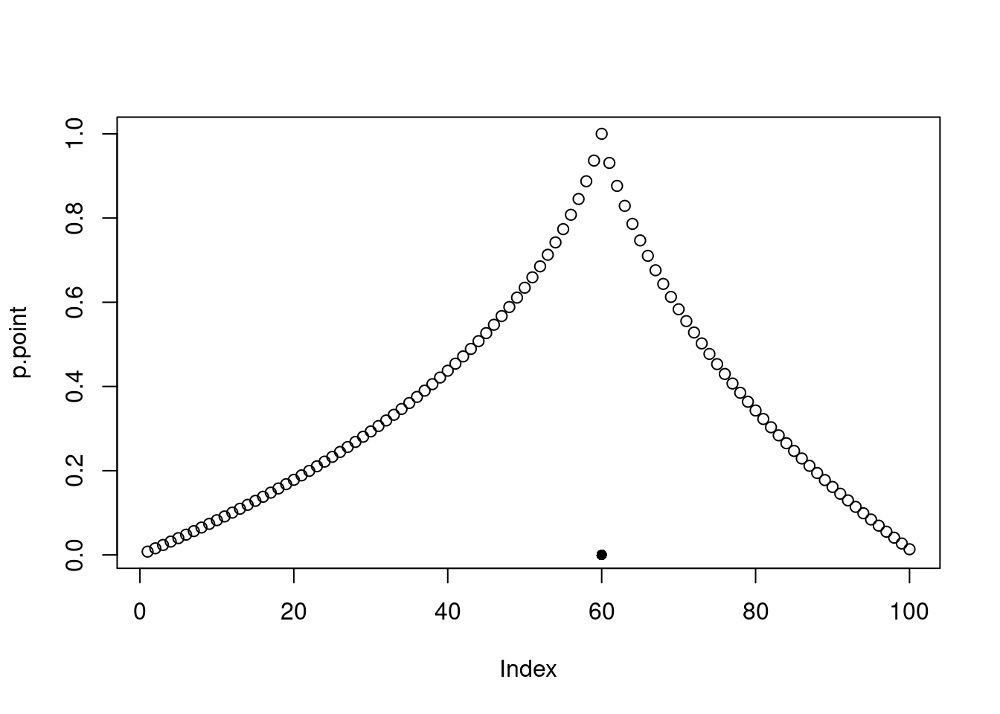
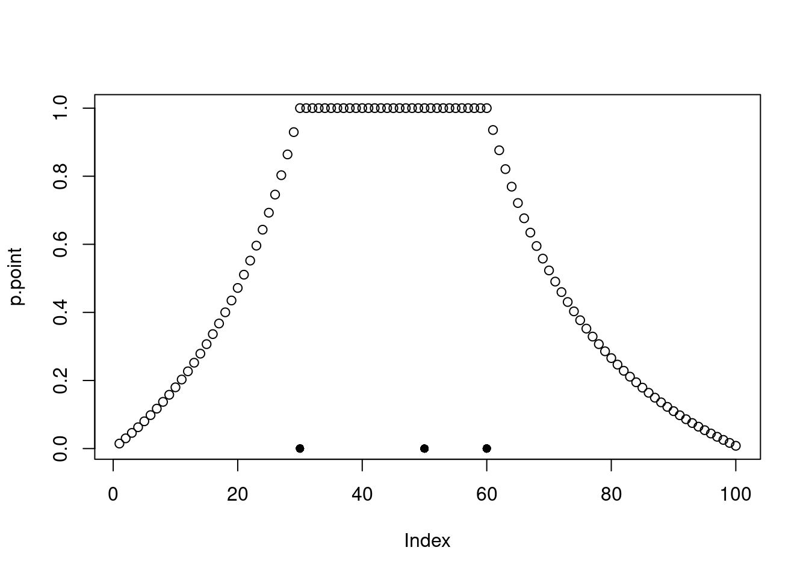
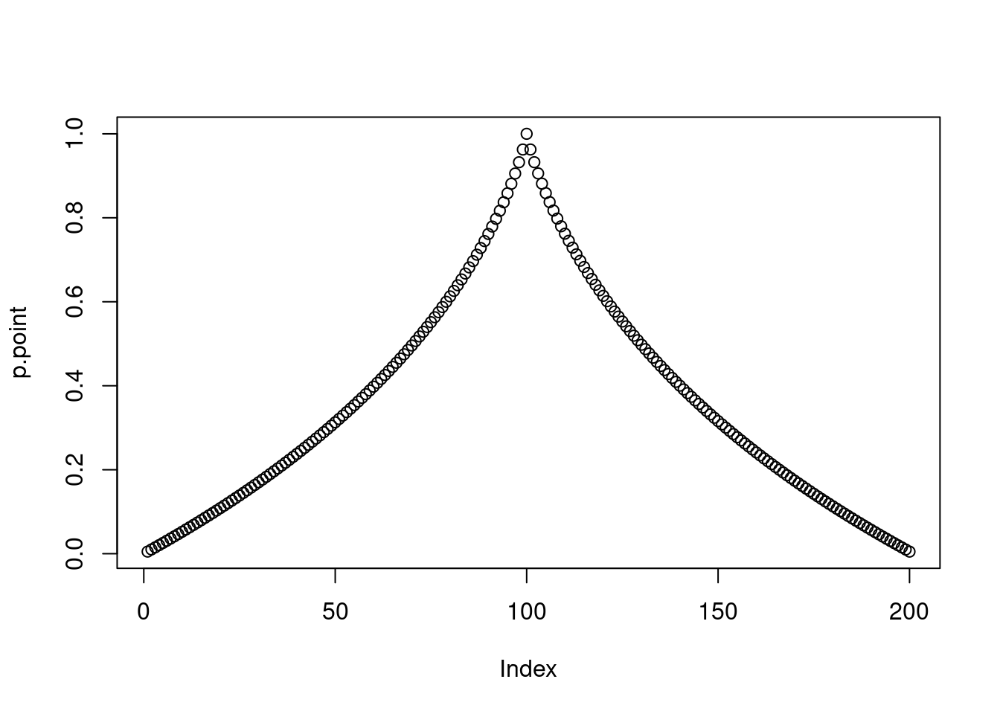
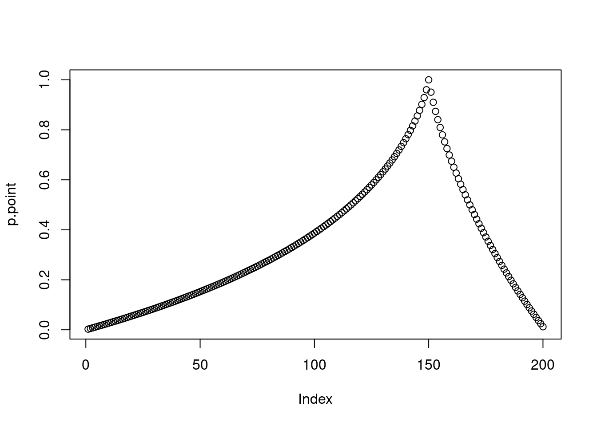
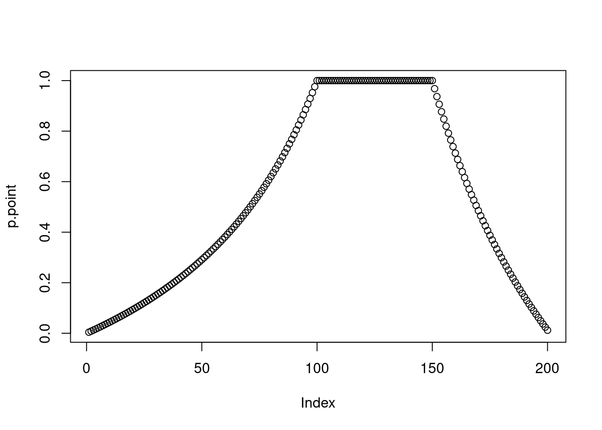
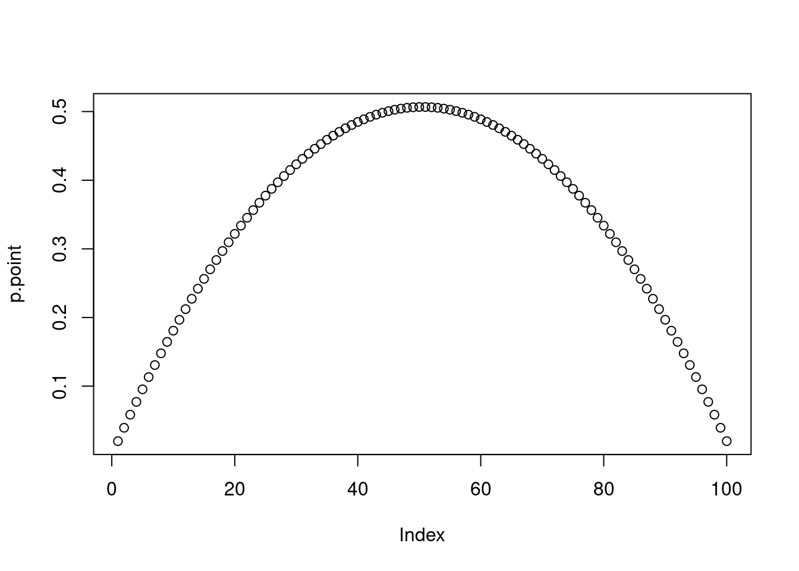
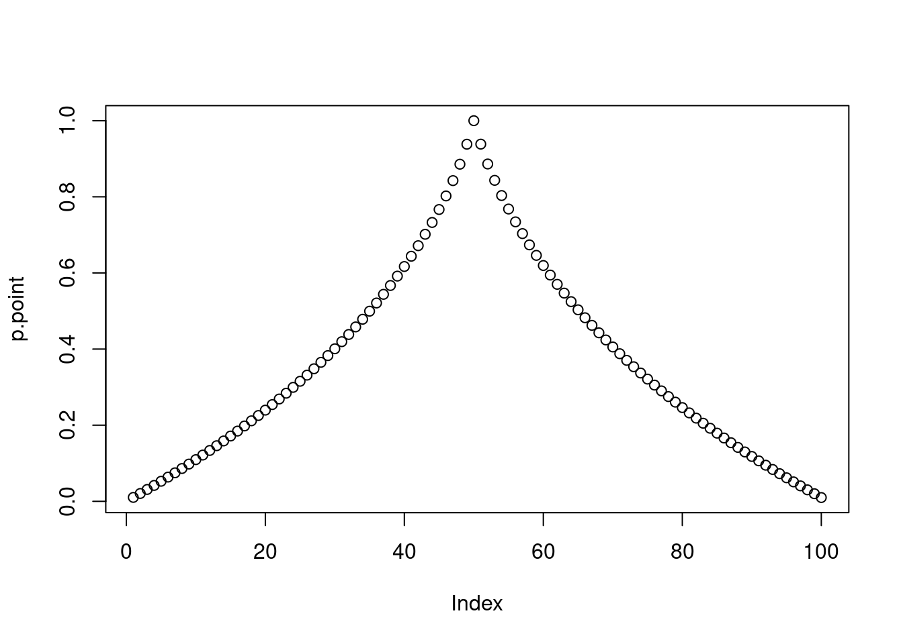
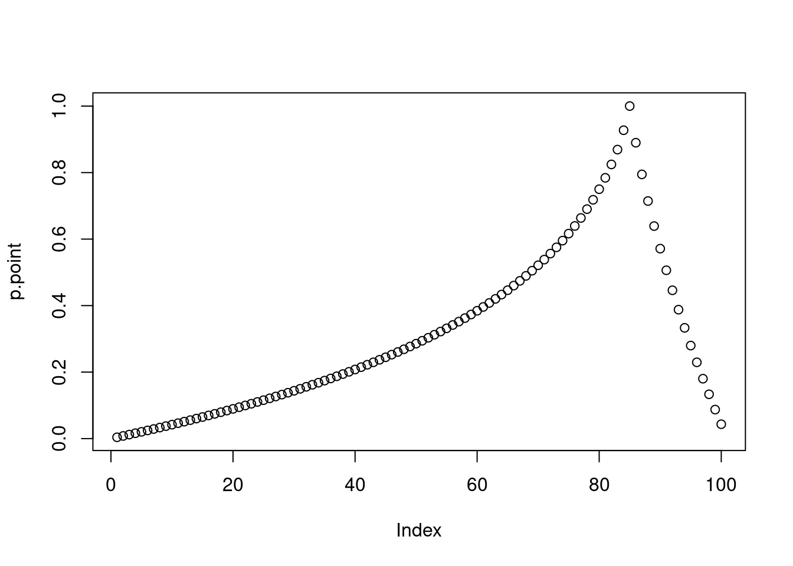
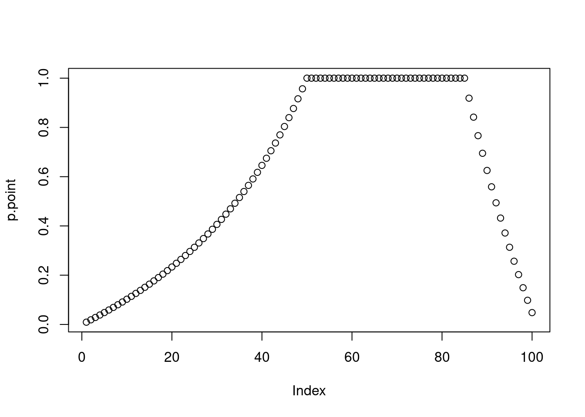

2 Categorization
Reading: Tenenbaum, Joshua B, and Thomas L Griffiths. 2001. “Generalization, Similarity, and Bayesian Inference.” Behavioural and Brain Sciences, 629–40.
In this lab, we are going to implement the categorization model from Tenenbaum & Griffiths (2001). This is a great model because it combines conceptually simple and plausible ingredients to get sophisticated predictions for an important cognitive phenomenon, namely categorization. As it happens, it is also quite easy to implement (compared to other models!).
This week I am not going to give you the meaning of each function we used, because figuring out what a function does is a skill you need to have anyway. Tip: beside googling (Google is a programmer’s best friend), you can ask R directly to tell you more about a function by running help(function.name).
2.1 The case of a single observation
As always, when doing Bayesian modelling the first step is to describe the situation that is being modelled (i.e. specifying a generative model). We have seen what the generative model for the categorization case looks like in the lecture on Monday, so we can get onto the implementation directly (though maybe have the paper open to you can refer back to it if something it confusing).
Let’s say our space is constrained between 1 and 100.
Let’s define some vectors containing the information for each hypothesis. First, an array with the lower and upper bounds (inclusive) for each category. The shape of this borders array is (# categories, 2). Note that there is a total of 5050 categories.
# all combinations of numbers from 1 up to (and including) the n.stimuli.
borders <- expand.grid(c(1:n.stimuli), c(1:n.stimuli))
# change row names
# lb for 'lower bound' and ub for 'upper bound'
colnames(borders) <- c('lb', 'ub')
# only keep those categories where the lower bound is lower
# or equal to the upper bound
borders <- borders[borders[,1]<=borders[,2],]
# reset the row names
row.names(borders) <- c(1:nrow(borders))
head(borders)## lb ub
## 1 1 1
## 2 1 2
## 3 2 2
## 4 1 3
## 5 2 3
## 6 3 3Second, an array with the size of each category:
## [1] 1 2 1 3 2 1Next, suppose we make a single observation, namely 60 (like in figure 1 from Tenenbaum & Griffiths 2001).
Let’s find the likelihood, i.e. the probability of the observation (60) given each category. This is described by strong sampling in the way we have seen in the Monday lecture.
likelihood.given.observation <- as.array(t(ifelse(
(borders['lb'] <= observation) & (borders['ub'] >= observation),
1/sizes,
0
)))
dim(likelihood.given.observation)## [1] 1 5050To find the posterior over hypotheses, assuming we have a uniform prior, it is enough to normalize the likelihood vector (can you see why?):
posterior <- (likelihood.given.observation / sum(likelihood.given.observation))
print(posterior[0:10])## [1] 0 0 0 0 0 0 0 0 0 0## [1] 1Finally, let’s average across categories. For each point in the space (i.e. integers between 1 and 100 inclusive) sum the probabilities of the categories that include that point. To to this, we first create an array that has the whole posterior for each stimulus.
# repeat the posterior for each stim,
# to get a matrix with shape (stimulus, categories)
tiled.posterior <-
matrix(
posterior,
nrow = n.stimuli, # number of stimuli
ncol = length(posterior),
byrow = TRUE
)Then, we create a mask so that for each stimulus we know which categories we need to consider in the sum (namely, those that contain the stimulus).
# for each stimulus, get a Boolean mask of the categories
# that contain the stimulus. The mask also has shape (stimulus, categories)
stimulus.index <-
matrix(c(1:n.stimuli),
nrow = n.stimuli,
ncol = length(posterior),
byrow = FALSE)
# NOTE 1: we have to reshape the lb and ub vectors
# so that it has the same shape as the mask
# NOTE 2: borders['lb'] returns a named vector,
# while borders[['lb']] returns the vector of numbers
mask <-
(
(stimulus.index >= t(replicate(n.stimuli, borders[['lb']]))) &
(stimulus.index <= t(replicate(n.stimuli, borders[['ub']])))
)Finally, we sum the tiled posterior as indicated by the mask. In other words, for each stimulus we sum the posterior probability of those hypotheses that contain the posterior. We plot the resulting distribution, which has for each point the probability that the point belongs to the unknown category (the black dot is the observation).
# use the Boolean array to attribut 0 to the hypotheses
# that do not contain a point
tiled.posterior[!mask] <- 0
dim(tiled.posterior)## [1] 100 5050# sum across categories to get the probability of each point
p.point <- rowSums(tiled.posterior)
plot(p.point)
points(observation,0,pch=16)
2.1.1 Little R programming trick
The operation above for doing binary comparison between an array with each row of a matrix can be rewritten more simply with the ‘sweep’ function in the following way:
# basically, sweep applies an operation to each ith row (or column) of a matrix
# using the ith element of an array
greater.equal.to.lb <- sweep(stimulus.index, 2, borders[['lb']], '>=')
# check that they are the same for every element
print(all((stimulus.index >= t(
replicate(n.stimuli, borders[['lb']])
)) == greater.equal.to.lb))## [1] TRUE# and therefore
mask.with.sweep <-
(
sweep(stimulus.index, 2, borders[['lb']], '>=') &
sweep(stimulus.index, 2, borders[['ub']], '<=')
)
all(mask==mask.with.sweep)## [1] TRUE2.2 The case of multiple observations
In the case of multiple observations, only two things need to be changed:
- We need to compare the lower bound of the category with the lowest observation and the upper bound of the category with the greatest observation, rather than comparing them just with a single observation.
- The likelihood is not anymore just \(\frac{1}{\text{size of category}}\), but rather \(\frac{1}{\text{size of category}^{\text{N of observations}}}\).
observations <- c(30, 50, 60)
n.observations <- length(observations)
min.obs <- min(observations)
max.obs <- max(observations)
likelihood.given.observation <- as.array(t(ifelse(
# HERE IS ONE CHANGE
(borders['lb'] <= min.obs) & (borders['ub'] >= max.obs),
# HERE IS ANOTHER CHANGE
1/(sizes^n.observations),
0
)))
posterior <- (likelihood.given.observation / sum(likelihood.given.observation))
tiled.posterior <-
matrix(
posterior,
nrow = n.stimuli, # number of stimuli
ncol = length(posterior),
byrow = TRUE
)
stimulus.index <-
matrix(c(1:n.stimuli),
nrow = n.stimuli,
ncol = length(posterior),
byrow = FALSE)
mask <-
(
sweep(stimulus.index, 2, borders[['lb']], '>=') &
sweep(stimulus.index, 2, borders[['ub']], '<=')
)
tiled.posterior[!mask] <- 0
p.point <- rowSums(tiled.posterior)
plot(p.point)
points(observations,rep(0,length(observations)),pch=16)
2.3 If there is time left…
Try to expand the model to a 2-d space, so that the hypotheses are rectangles instead of segments.
2.4 Exercises
- Imagine you have two observations at 100 and 110. Now, you get another observation between them at 105. What happens to the generalization gradient? Why? (NOTE: I don’t mean the exact numbers, but rather how the ‘shape’ of the generalization gradient changes. This doesn’t depend on the size of the space very much, but if it helps you to use a specific space assume that the space is between 0 and 200.)
- Plot the prior distribution describing the probability that each stimulus belongs to the true category before making any observation (NOTE: Use the space above with points between 1 and 100).
- Change the code so that there are 200 instead of 100 stimuli. Plot the probability of each stimulus belonging to the category with observations {100}, {150}, {100,150}.
Now imagine that you have prior reason for thinking that the true category contains an even number of stimuli, so that any category with an even number of stimuli is twice as likely a priori as any category with an odd number of stimuli.
- Change the code to calculate the prior accordingly and plot the generalization function before observing any stimulus.
- Plot the generalization function after observing {50}, {85}, and {50, 85}.
2.5 Answers
# Let's define three useful functions that we can reuse below, for clarity
# NOTE: you didn't need to use functions, you could just copy-paste
# the relevant bits of code each time.
# NOTE: I have only made minimal changes to these function compared to the
# code above to make it a bit more general. I have marked the changes with comments.
# just copied some code from above. No changes here
create.borders <- function(n.stimuli){
borders <- expand.grid(c(1:n.stimuli), c(1:n.stimuli))
colnames(borders) <- c('lb', 'ub')
borders <- borders[borders[,1]<=borders[,2],]
row.names(borders) <- c(1:nrow(borders))
# Only added a return line because it's a function
return(borders)
}
# Use same code as above to calculate sizes
create.sizes <- function(borders){
return(as.vector(t(borders['ub']-borders['lb'] + 1)))
}
# let's copy the bit for going from a distribution over categories to
# the generalization gradient and put it into a function
# (I just changed the word 'posterior' with 'distribution' for clarity)
plot.gradient.from.categories.dist <- function(distribution){
tiled.distribution <-
matrix(
distribution,
nrow = n.stimuli, # number of stimuli
ncol = length(distribution),
byrow = TRUE
)
stimulus.index <-
matrix(c(1:n.stimuli),
nrow = n.stimuli,
ncol = length(distribution),
byrow = FALSE)
mask <-
(
sweep(stimulus.index, 2, borders[['lb']], '>=') &
sweep(stimulus.index, 2, borders[['ub']], '<=')
)
tiled.distribution[!mask] <- 0
p.point <- rowSums(tiled.distribution)
plot(p.point)
}
# copy the code for calculating the posterior
# NOTE: only change is that we are also multiplying by the prior now
# NOTE: if prior isn't specified, a uniform prior is assumed in this function
calculate.posterior <- function(observations, borders, sizes, prior=1){
n.observations <- length(observations)
min.obs <- min(observations)
max.obs <- max(observations)
likelihood.given.observation <- as.array(t(ifelse(
(borders['lb'] <= min.obs) & (borders['ub'] >= max.obs),
1/(sizes^n.observations),
0
)))
# Only change here: multiply by prior
posterior <- (likelihood.given.observation*prior / sum(likelihood.given.observation*prior))
return(posterior)
}The answer is that adding a new observation between two observations that we know are already examples of the category makes the generalization gradient decrease steeper as it gets further from the maximum and minimum observations. This is because under the strong sampling assumption, if the category had been much larger than the category between the observed minimum and maximum, it would have been likely for the new observation to be below the minimum or above the maximum of the previously observed examples. However, the same does not hold under weak sampling.
To answer this question it was enough to change line 153 (observations <- c(30, 50, 60)) to observations <- c() and re-run the cell.
n.stimuli <- 100
borders <- create.borders(n.stimuli)
sizes <- create.sizes(borders)
posterior.exercise.1 <- calculate.posterior(c(), borders, sizes)## Warning in min(observations): no non-missing arguments to min; returning Inf## Warning in max(observations): no non-missing arguments to max; returning -InfAlternatively, you could avoid calculating the posterior at all and just use the prior.
n.stimuli <- 200
borders <- create.borders(n.stimuli)
sizes <- create.sizes(borders)
posterior.exercise.3 <- calculate.posterior(c(100), borders, sizes)
plot.gradient.from.categories.dist(posterior.exercise.3)
posterior.exercise.3 <- calculate.posterior(c(150), borders, sizes)
plot.gradient.from.categories.dist(posterior.exercise.3)
posterior.exercise.3 <- calculate.posterior(c(100, 150), borders, sizes)
plot.gradient.from.categories.dist(posterior.exercise.3)
# I accepted both a space between 1 and 100 and between 1 and 200
n.stimuli <- 100
borders <- create.borders(n.stimuli)
sizes <- create.sizes(borders)
# create new prior
even.prior <- -(sizes%%2-2)
even.prior <- even.prior / sum(even.prior)
distribution.exercise.4 <- calculate.posterior(c(), borders, sizes, prior=even.prior)## Warning in min(observations): no non-missing arguments to min; returning Inf## Warning in max(observations): no non-missing arguments to max; returning -Inf
posterior.exercise.5 <- calculate.posterior(c(50), borders, sizes, prior=even.prior)
plot.gradient.from.categories.dist(posterior.exercise.5)
posterior.exercise.5 <- calculate.posterior(c(85), borders, sizes, prior=even.prior)
plot.gradient.from.categories.dist(posterior.exercise.5)
posterior.exercise.5 <- calculate.posterior(c(50, 85), borders, sizes, prior=even.prior)
plot.gradient.from.categories.dist(posterior.exercise.5)